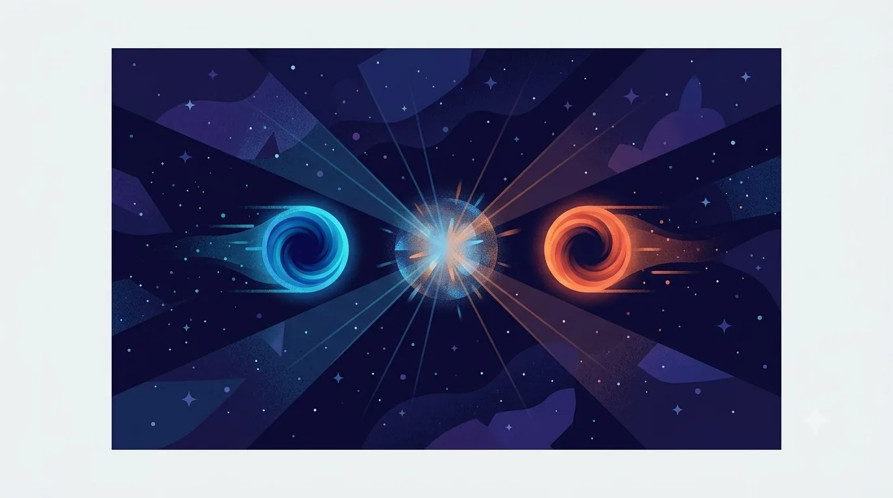

Antimatter
Every particle of matter you've met has a mirror twin: an antiparticle with exactly the same mass, but the opposite electric charge (and opposite values of certain other properties). The electron's antiparticle is the positron — same mass, positive instead of negative charge. Every quark, every lepton, has one.
Carl Anderson discovered the positron in 1932, confirming a strange prediction that had fallen out of Paul Dirac's 1928 equation for the electron — an equation that, mathematically, seemed to insist on a "negative energy" mirror version of the electron existing somewhere. Dirac's math was right. It was the first antiparticle anyone had ever observed.

A striking symmetrical illustration of matter and antimatter: on the left a glowing blue particle, on the right its mirror-image glowing counterpart in a warm contrasting hue, both approaching each other along a dark starlit corridor, with the point where they will meet radiating a burst of light to suggest imminent annihilation into pure energy. Deep indigo night-sky palette, one warm accent color reserved only for the antimatter side, flat-modern editorial illustration style, no text baked in. Target size ~1280×720px, 16:9 landscape; compose for a small on-page figure, subject centred with safe margins since it is letterboxed into a 16:9 box.
Generate this with your image agent, then drop the file here.
CERN runs a genuine "Antimatter Factory," where the ALPHA experiment traps antihydrogen atoms in a magnetic bottle for hours at a time, and the BASE experiment achieved the best vacuum ever reported in any experiment on Earth to store antiprotons for over a year — both built to compare matter and antimatter with extreme precision, looking for any tiny difference between them.